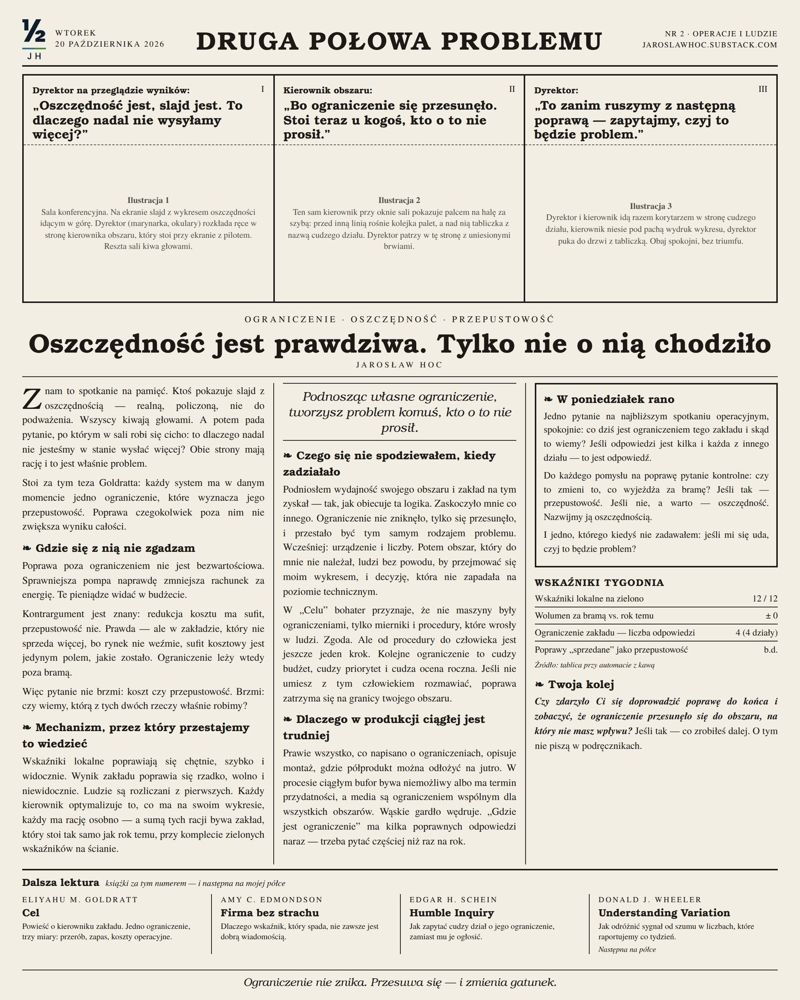
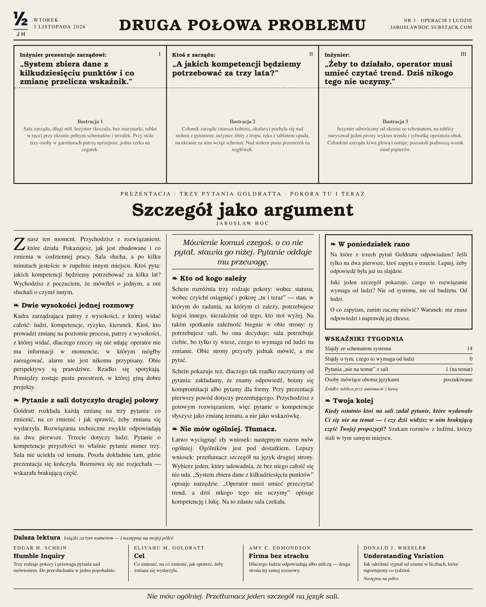
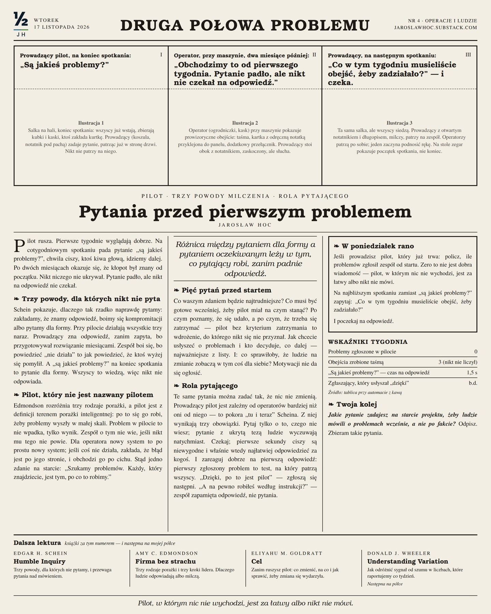

Numery
Każdy tekst ma swoją stronę gazety: rysunek, skrót i jedna rzecz do zrobienia w poniedziałek rano. Kliknij, żeby powiększyć.

Naprawa to jeszcze nie wniosek


Oszczędność jest prawdziwa. Tylko nie o nią chodziło


Szczegół jako argument


Pytania przed pierwszym problemem